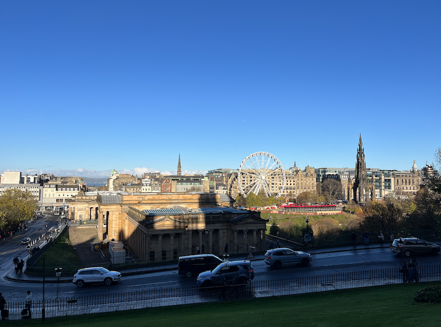
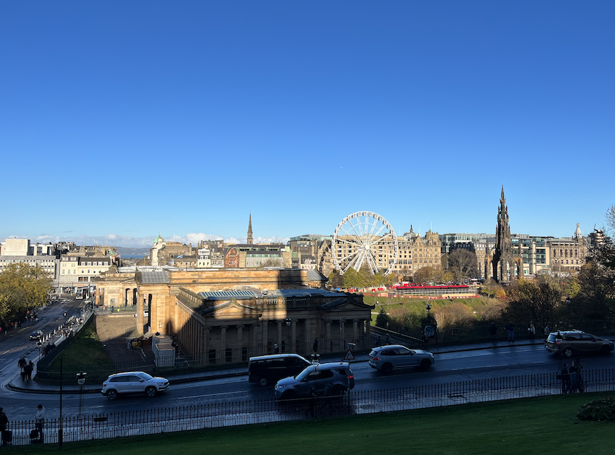

About
I am a geophysicist dedicated to pushing the boundaries of laboratory seismic research to support the energy transition toward a net‑zero world. I design digital twins and lab experiments to understand and control wave–fracture interaction, translate field methods (e.g., coda wave interferometry) to lab scale, and build processing toolboxes for dynamic loading experiments.
- Postdoctoral Research Associate, University of Edinburgh
- PhD, ETH Zurich (Geophysics)
- Rock physics • Acoustics • Seismic waves
- Energy transition • Geothermal • H2/CO2 storage
Research Focus
Goal: predictive and active control of induced seismicity for safe subsurface energy operations.
Feedback Control of Hydraulic Stimulation
Real‑time control of injection rate and pore pressure guided by seismic attributes (velocity, attenuation, anisotropy) to cap the largest induced events.
- Portable triaxial apparatus with X‑ray transparency
- Edge computing for real‑time attributes
- Beamtime at Diamond/APS to link microstructure to seismicity
Wave Focusing on Fractures
Time‑reversal mirrors to concentrate elastic energy on target fractures to dissipate strain energy safely (lab analogue to therapeutic ultrasound).
- Dense active arrays and full spatiotemporal control
- Build prototypes from rock blocks to sliding planes
- Enable super‑resolution imaging as a by‑product
Physics‑informed AI + Digital Twins
AI agent trained in a digital twin to steer lab earthquakes via wave injection or feedback injection control, leveraging AE precursors.
- Finite‑difference/finite‑element twins
- Thermodynamic fracture energy models
- Transfer learning from synthetic to physical
Read a short narrative of the 5‑year plan
Year 1: Prototype pore‑pressure feedback control using University of Edinburgh apparatus; apply for beamtime. Year 2–3: NSF/EAR + CAREER for a new apparatus; digital twin + AI agent prototype. Year 4: APS campaign with real‑time control. Year 5: Publish major results; prepare field pilots with operators (e.g., FORGE, Geysers, Newberry) and energy partners.
Selected Highlights
- Immersive Elastic Wave Experimentation — solved boundary reflection challenges in 3D elastic lab experiments; enabled closed‑aperture wavefield decomposition and digital‑twin‑assisted experiment design.
- Processing Toolbox for Dynamic Loading — maintained and extended a lab seismic processing toolbox; adapted field methods (e.g., coda wave interferometry) to the lab.
- Velocity Transient Theory + Database — advanced theory and curated a literature‑based database of seismic velocity transients for failure susceptibility.
- Automated 3D Laser Vibrometry — integrated robotics for dense 3D measurements; compensated source directivity effects to enable accurate wave control.
Peer‑reviewed Publications
Waves and Laboratory Acoustics
- Li, X., Robertsson, J., van Manen, D‑J. Elastic immersive wave experimentation, Geophysical Journal International (2023). Immersive Lab
- Li, X., Robertsson, J., Curtis, A., van Manen, D‑J. Internal absorbing boundary conditions for closed‑aperture wavefield decomposition..., JASA (2022). IBC
- Li, X., Koene, E., van Manen, D‑J., Robertsson, J., Curtis, A. Elastic immersive wavefield modeling, Journal of Computational Physics (2022). JCP
- Li, X., Becker, T., Ravasi, M., Robertsson, J., van Manen, D‑J. Closed‑aperture unbounded acoustics experimentation using multidimensional deconvolution, JASA (2021). Cover (Mar 2021)
- Li, X., Robertsson, J., Curtis, A., van Manen, D‑J. Compensating for source directivity in immersive wave experimentation, JASA (2019).
- Müller, J., Becker, T. S., Li, X., et al. Acoustic cloning, Physical Review Applied (2023).
- Becker, T. S., van Manen, D‑J., Bärlocher, C., Li, X., et al. Broadband acoustic invisibility and illusions, Science Advances (2021).
- van Manen, D‑J., Li, X.*, Vasmel, R., Broggini, F., Robertsson, J. Exact extrapolation and immersive modeling with finite‑difference injection, GJI (2020).
* Corresponding author
Rock Physics
- Li, X., Sens‑Schönfelder, C., Snieder, R. Nonlinear elasticity in resonance experiments, Physical Review B (2018).
- Li, X., Main, I., Jupe, A. Induced seismicity at the UK ‘hot dry rock’ test site for geothermal energy production, GJI (2018).
- Sens‑Schönfelder, C., Snieder, R., Li, X. A model for nonlinear elasticity in rocks..., GJI (2019).
Expanded and conference abstracts
- Li, X., Bösing, N., Becker, T., et al. Immersive Wave Control Experiments Using Non‑isotropic Sources, Forum Acusticum (2020).
- Li, X., Becker, T., Ravasi, M., et al. Multidimensional Deconvolution for Boundary Reflection Removal..., ParCFD (2021).
- van Manen, D‑J., Becker, T., Li, X., et al. Acoustic Cloning, ICUA (2022).
- Li, X., Becker, T., Ravasi, M., et al. Unbounded full‑aperture acoustics using MDD, ASA (2021).
- Li, X., Bösing, N., Becker, T., et al. Immersive wave control using compensated directive sources, ASA (2019).
- Sens‑Schönfelder, C., Snieder, R., Li, X. Seismic velocity changes induced by dynamic strain, EGU (2018).
Online CV
Professional Career
-
Postdoctoral Research Associate — University of Edinburgh
Nov 2023 – Present
- Developed and maintained a seismic processing toolbox for triaxial dynamic loading experiments.
- Built digital twins to design lab seismic acquisitions and correct source signatures.
- Adapted field methods (e.g., coda wave interferometry) to laboratory scale.
- Advanced theory and experiments on seismic velocity transients to assess failure susceptibility.
- Curated a literature‑based database of velocity transients.
Education
-
ETH Zurich — PhD in Geophysics (2018–2022)
Thesis: Elastic immersive wave experimentation
Advisors: Prof. Johan Robertsson -
Colorado School of Mines — MS in Geophysics (2016–2018), GPA 3.99
Thesis: A unified interpretation of nonlinear elasticity in granular solids
Advisor: Prof. Roel Snieder - University of Edinburgh — BSc (Hons) in Geophysics (2014–2016), First Class (77/100)
- Nanjing University — BSc in Geology (2012–2014), GPA 4.52/5.0
Awards & Grants
- Chinese Government Award for Outstanding Self‑Financed Students Abroad (2021)
- Mobil North Sea Prize — Class Medal (2015)
- China National Scholarship (2013)
- Beamtime MG37177 (Diamond Light Source), Co‑I
- SNF Postdoc.Mobility (CHF 106,600, awarded 2023; declined/adjusted to role as applicable)
- LabEx WIFI postdoc fellowship (ESPCI, 2023; awarded; as applicable)
Teaching & Mentoring
- TA, Numerical Modeling in Applied Geophysics (ETH Zurich, 2019–2022)
- TA, Exploration & Environmental Geophysics (ETH Zurich, 2019)
Professional Service
- Early‑Career Researcher Representative, University of Edinburgh (Oct 2024– )
- Journal reviewer: Geophysics, GRL, Geophysical Prospecting, JASA, Petroleum Science
- Societies: SEG, ASA, EAGE
Code
- CodaWaveSolver — C++ tool for estimating phase shifts via the stretching technique on repeated active or ambient-noise seismic signals.
Research Statement
Fractures govern both natural earthquakes and the safety of subsurface energy operations. I develop laboratory wave control, digital twins, and physics‑informed AI toward predictive suppression of induced seismicity — a step beyond reactive “traffic‑light” systems.
Read the condensed statement
Vision: RockWave Lab — coupling waves, fractures, and operations in a feedback loop (measure → infer → act) to reduce seismic risk during hydraulic fracturing, geothermal production, and H2/CO2 storage.
- Demonstrate real‑time pore‑pressure control to cap maximum event magnitudes in triaxial experiments under X‑ray imaging.
- Focus elastic waves to dissipate fracture energy safely using time‑reversal mirrors.
- Train an AI agent in a digital twin to steer lab earthquakes in real time via wave injection and injection control.
Long‑term: Pilot predictive control protocols with operators at U.S. geothermal sites, transitioning from reactive thresholds to proactive, physics‑driven control.
Contact
For collaborations, academic inquiries, or to discuss wave control and induced seismicity:
lixunjack@gmail.com • jack.li@ed.ac.uk • LinkedIn
 
